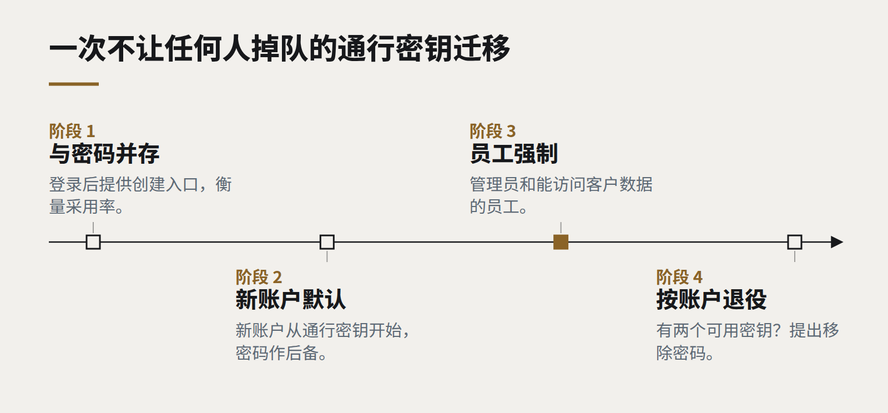

洞察
技术趋势
通行密钥已经就绪，你的登录页大概还没有
抗钓鱼的登录方式，如今已经能在客户手里现有的设备上通用。技术已经完成，剩下的是产品设计和一个合理的迁移计划。

密码依然是大多数企业系统里最薄弱的一环。它们被重复使用、被钓鱼、被猜中、被泄露；而叠加在上面的每一层防御——复杂度规则、定期更换、短信验证码——都增加了摩擦，却没有消除根本问题。基于 WebAuthn 标准的通行密钥（passkeys）消除了它。登录不再依靠用户输入的秘密，而是一对密钥：私钥留在用户设备上，由指纹、面容或设备 PIN 保护，并且只会响应真正的网站。
最后这一点最重要。通行密钥无法被“输入”到一个假冒的登录页面里，因为它绑定的是真实域名。钓鱼——企业账户被攻破最常见的方式——就这样失效了。
为什么是现在
好几年里，通行密钥技术上可靠、实践中别扭。这种情况已经改变。主流手机和电脑平台都已支持通行密钥，能通过用户已有的账户在其设备之间同步，并允许用户在新设备上用手机扫码登录。对大多数客户来说，这比输入密码更快：点一下，看一眼手机，完成。

挡在路上的是产品设计
剩下的障碍几乎都在于服务如何引入通行密钥，而不在技术本身。
- 被发现。 用户不会主动去找通行密钥设置。提供它的最佳时机，是一次成功登录或重置密码之后，配上一句话说明好处。
- 措辞。 “通行密钥”对大多数人来说还没有意义，“用面容或指纹登录”才有。
- 找回。 人会丢手机。服务在允许任何人放弃密码之前，必须先有一条清晰、安全的找回路径——第二个通行密钥、恢复码，或者经过验证的身份。
- 共享和受管设备。 在共享终端上工作的员工，或者设备策略严格的组织，需要一个合适的选项，比如硬件安全密钥。
一次不让任何人掉队的迁移
我们建议分阶段推进：
- 在密码旁边增加通行密钥。 登录后提供创建入口，衡量采用率和登录成功率。
- 新账户默认使用通行密钥，密码作为后备，而不是反过来。
- 员工和管理员强制使用。 能访问客户数据的内部账户是最有价值的攻击目标，也是最容易提供支持的人群。
- 按账户退役密码，而不是按系统。 一旦某个用户有了两个可用的通行密钥，就提出帮他彻底移除密码。
下一次安全评审可以问的问题
- 过去一年的账户被攻破事件中，有多少比例始于被钓鱼或被重复使用的密码？
- 管理员账户今天使用的是抗钓鱼的登录方式吗？
- 账户找回流程是什么样的，攻击者能否利用它绕过其他一切？
通行密钥不能解决所有安全问题。但很少有哪项改变，能在消除一整类攻击的同时，还让用户登录得更快。它值得写进今年的路线图。
继续阅读
全部洞察